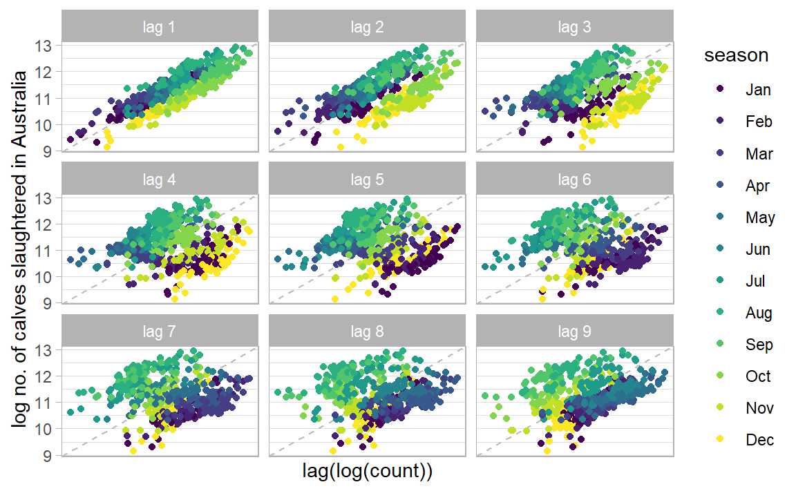
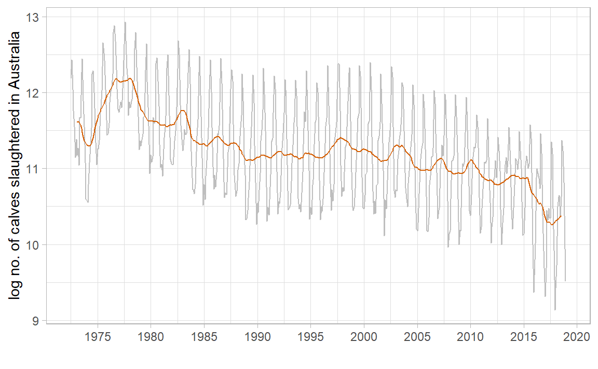
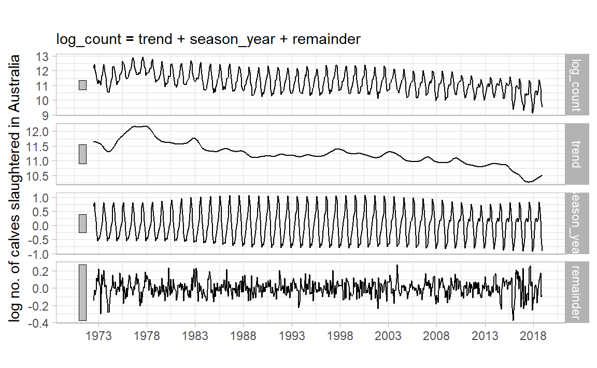
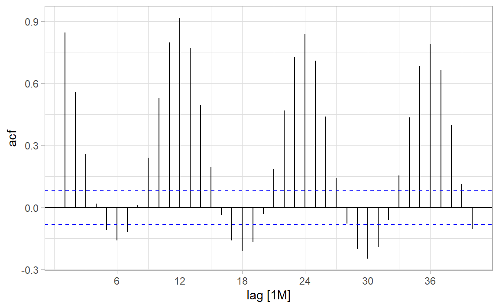
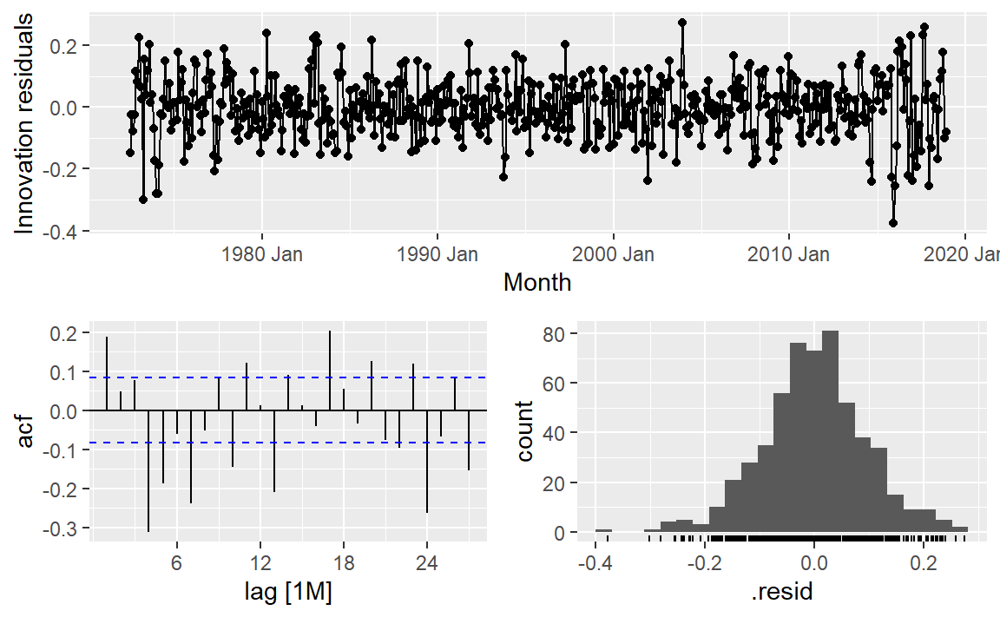
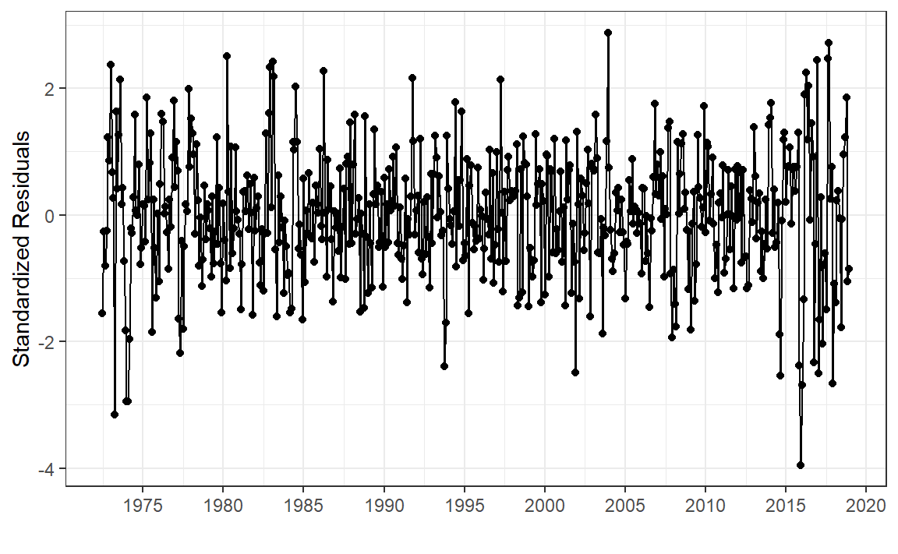
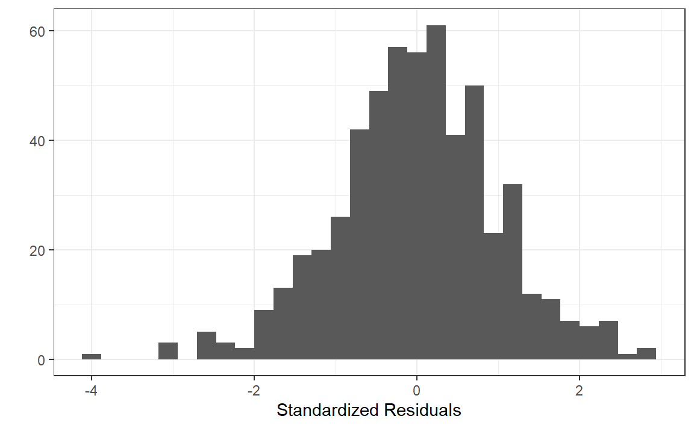
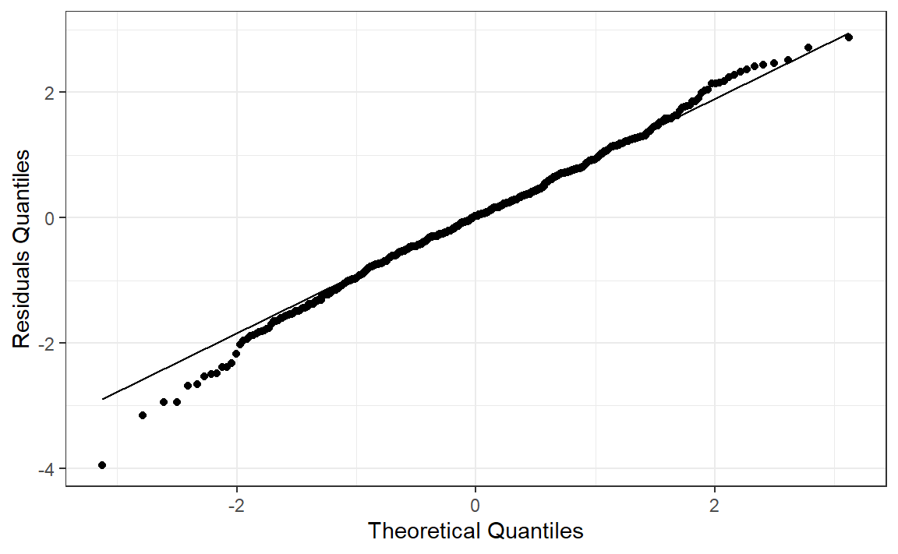
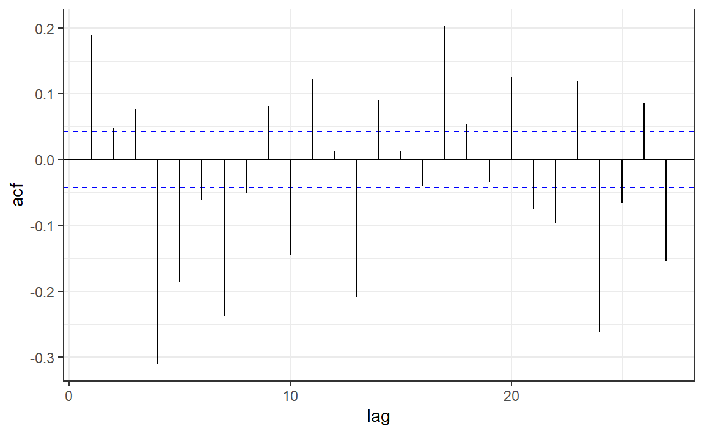
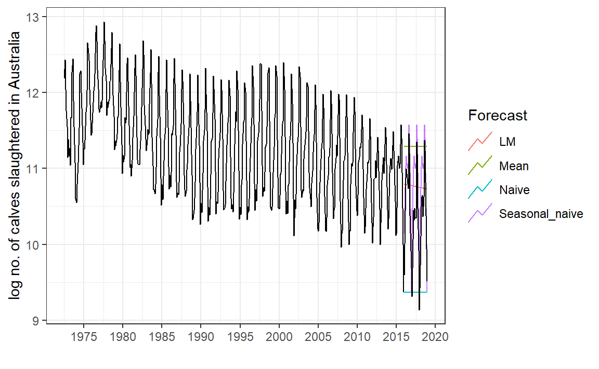

Time Series Intro
Applications of Data Science - Class 20
Giora Simchoni
Stat. and OR Department, TAU
2023-04-07
What is a Time Series?
A time series is a sequence of observations taken sequentially in time.
Code
library (tidyverse)library (tsibble)library (tsibbledata)library (feasts)|> filter (Animal == "Calves" ) |> index_by () |> summarise (Count = sum (Count)) |> autoplot (log (Count)) + labs (x = "" , y = "log no. of calves slaughtered in Australia" ) + scale_x_yearmonth (date_breaks = "5 year" , date_labels = "%Y" ) + theme_light ()
TSA Focuses on:
Discrete measurements
Equally-spaced
Usually no missing values
Not that short (say > 20? 50?)
Time is intrinsic, it is not just another feature
Could involve time-varying/non-time-varying explaining features
E.g. this is more of a longitudinal/growth-curve/cohort dataset:
TSA Goals
Forecasting (prediction)
Monitoring: outlier detection, alert systems
Describing: the TS dynamics, input features contribution
Planning: control schemes, intervention analyses, sensitivity analyses
Clustering: with multivariate TS
The Date class
<- as.Date ("1915-6-16" )class (date_obj)
Internally, Date objects are stored as the number of days since January 1, 1970, using negative numbers for earlier dates.
So this naturally works:
[1] "1915-06-16" "1915-06-26"
Can also accept different formats and has a few built-in functions:
<- as.Date ("1/15/2001" ,format= "%m/%d/%Y" )months (date_obj)
The POSIX classes
POSIX is a slightly more evolved class from UNIX, holding number of seconds since January 1, 1970, and a time zone may be specified:
[1] "2023-04-07 14:04:13 IDT"
The POSIXlt class will store time in a list with useful elements:
<- as.POSIXlt (now, tz = "GMT" )$ hour
The lubridate package
Parsing dates:
Making dates:
make_date (year = 2013 , month = 2 , day = 12 )
Converting between formats:
Getting components:
<- ymd_hms ("2016-07-08 12:34:56" )year (datetime)
Duration, time maths:
today () - ymd ("2020-01-01" ) #base R difftime object
Time difference of 1192 days
as.duration (today () - ymd ("2020-01-01" ))
[1] "102988800s (~3.26 years)"
[1] "2022-04-06 18:00:00 UTC"
The Tidyverts
A suite of packages for TSA, the tidy way, led by Rob J. Hyndman :
tsibble: The data.frametibble re-imagined for temporal datatsibbledata: TS datasetsfeasts: Feature extraction for TS + Some useful gg plotsfable and fabletools: The modeling and forecasting packagemore and more to come.
See tidyverts.org .
tsibbleNeed a time index:
library (tsibble)tsibble (date = as.Date ("2017-01-01" ) + 0 : 9 ,value = rnorm (10 )
# A tsibble: 10 x 2 [1D]
date value
<date> <dbl>
1 2017-01-01 1.60
2 2017-01-02 1.07
3 2017-01-03 -0.329
4 2017-01-04 -0.753
5 2017-01-05 -1.28
6 2017-01-06 -0.285
7 2017-01-07 0.289
8 2017-01-08 -0.342
9 2017-01-09 -0.720
10 2017-01-10 0.696
Here, as date is the only Datetsibble gets this.
[1D] is the tsibble’s interval.
Grouping variable(s) are specified with key:
tsibble (qtr = rep (yearquarter ("2010 Q1" ) + 0 : 9 , 3 ),group = rep (c ("x" , "y" , "z" ), each = 10 ),value = rnorm (30 ),key = group
# A tsibble: 30 x 3 [1Q]
# Key: group [3]
qtr group value
<qtr> <chr> <dbl>
1 2010 Q1 x -2.19
2 2010 Q2 x 0.266
3 2010 Q3 x 0.880
4 2010 Q4 x -0.0491
5 2011 Q1 x 1.55
6 2011 Q2 x 0.390
7 2011 Q3 x -0.331
8 2011 Q4 x -1.01
9 2012 Q1 x 0.345
10 2012 Q2 x 0.119
# … with 20 more rows
Here there are 54 TS combinations:
# A tsibble: 29,364 x 4 [1M]
# Key: Animal, State [54]
Month Animal State Count
<mth> <fct> <fct> <dbl>
1 1976 Jul Bulls, bullocks and steers Australian Capital Territory 2300
2 1976 Aug Bulls, bullocks and steers Australian Capital Territory 2100
3 1976 Sep Bulls, bullocks and steers Australian Capital Territory 2100
4 1976 Oct Bulls, bullocks and steers Australian Capital Territory 1900
5 1976 Nov Bulls, bullocks and steers Australian Capital Territory 2100
6 1976 Dec Bulls, bullocks and steers Australian Capital Territory 1800
7 1977 Jan Bulls, bullocks and steers Australian Capital Territory 1800
8 1977 Feb Bulls, bullocks and steers Australian Capital Territory 1900
9 1977 Mar Bulls, bullocks and steers Australian Capital Territory 2700
10 1977 Apr Bulls, bullocks and steers Australian Capital Territory 2300
# … with 29,354 more rows
Wrangling similar to the Tidyverse, only group_by() + summarise() on a time index would be index_by() + summarise():
<- aus_livestock |> filter (Animal == "Calves" ) |> index_by () |> summarise (count = sum (Count), log_count = log (count))
# A tsibble: 558 x 3 [1M]
Month count log_count
<mth> <dbl> <dbl>
1 1972 Jul 196200 12.2
2 1972 Aug 250600 12.4
3 1972 Sep 170100 12.0
4 1972 Oct 128500 11.8
5 1972 Nov 103400 11.5
6 1972 Dec 69200 11.1
7 1973 Jan 87800 11.4
8 1973 Feb 71300 11.2
9 1973 Mar 78200 11.3
10 1973 Apr 62600 11.0
# … with 548 more rows
feastsSeamless integration with ggplot2 and friends, use autoplot() from feasts:
|> autoplot (log_count) + labs (x = "" , y = "log no. of calves slaughtered in Australia" ) + scale_x_yearmonth (date_breaks = "5 year" , date_labels = "%Y" ) + theme_light ()
Some more useful plots:
library (feasts)|> gg_season (log_count) + labs (x = "" , y = "log no. of calves slaughtered in Australia" ) + theme_light ()
|> gg_subseries (log_count) + labs (x = "" , y = "log no. of calves slaughtered in Australia" ) + scale_x_yearmonth (labels = NULL ) + theme_light ()
|> gg_lag (log_count, geom = "point" ) + labs (x = "lag(log(count))" , y = "log no. of calves slaughtered in Australia" ) + scale_x_yearmonth (labels = NULL ) + theme_light ()

Some useful features for multiple series:
|> features (log (Count), quantile)
# A tibble: 54 × 7
Animal State `0%` `25%` `50%` `75%` `100%`
<fct> <fct> <dbl> <dbl> <dbl> <dbl> <dbl>
1 Bulls, bullocks and steers Australian C… -Inf -Inf -Inf 7.60 8.32
2 Bulls, bullocks and steers New South Wa… 10.8 11.1 11.3 11.4 11.9
3 Bulls, bullocks and steers Northern Ter… -Inf -Inf 4.61 7.85 9.74
4 Bulls, bullocks and steers Queensland 10.5 11.7 11.9 12.1 12.4
5 Bulls, bullocks and steers South Austra… 8.59 9.59 9.80 9.96 10.4
6 Bulls, bullocks and steers Tasmania 8.16 8.75 8.95 9.15 9.67
7 Bulls, bullocks and steers Victoria 10.4 10.8 11.0 11.1 11.8
8 Bulls, bullocks and steers Western Aust… 8.97 9.62 9.83 10.1 10.7
9 Calves Australian C… -Inf -Inf -Inf 4.61 7.17
10 Calves New South Wa… 7.60 9.62 9.83 10.0 11.0
# … with 44 more rows
|> group_by (Animal) |> summarise (total_count = sum (Count)) |> features (log (total_count), feat_stl) |> select (Animal, trend_strength, spikiness, linearity)
# A tibble: 7 × 4
Animal trend_strength spikiness linearity
<fct> <dbl> <dbl> <dbl>
1 Bulls, bullocks and steers 0.727 8.61e-11 0.0747
2 Calves 0.945 6.94e-10 -8.02
3 Cattle (excl. calves) 0.818 9.96e-11 0.656
4 Cows and heifers 0.881 1.56e-10 0.955
5 Lambs 0.834 1.34e-10 2.35
6 Pigs 0.930 1.42e-11 2.14
7 Sheep 0.931 6.26e-10 -4.38
Why did we need log? What would occur without it?
What other transformations are worth considering? Hint: “total monthly sales”
What is the 1st conclusion about no. of calves slaughtered in AUS? What is the 2nd?
Classical Decomposition
Let \(Y_1, \dots, Y_n\) be our TS, then: \[
Y_t = S_t + T_t + e_t
\]
where \(S_t\) is the seasonal component, \(T_t\) is the trend, \(e_t\) is the remainder, all at time \(t\) .
Necessary but not sufficient condition: Make \(e_t\) “white noise”, i.e. \(e_t \stackrel{iid}\sim \mathcal{N}(0, \sigma^2)\)
Decomposition can also be multiplicative:
\[
Y_t = S_t \times T_t \times e_t
\]
but then we’d take \(\log(Y_t)\) .
To make a long story short:
Moving Averages
\(m\) -MA suitable for an odd seasonality period \(m = 2k + 1\) (e.g. a week):
\[
\hat{T}_t = \frac{1}{m}\sum_{j = -k}^{j = k} Y_{t + j}
\]
|> mutate (` 7-MA ` = slider:: slide_dbl (log_count, mean,.before = 3 , .after = 3 , .complete = TRUE )
# A tsibble: 558 x 4 [1M]
Month count log_count `7-MA`
<mth> <dbl> <dbl> <dbl>
1 1972 Jul 196200 12.2 NA
2 1972 Aug 250600 12.4 NA
3 1972 Sep 170100 12.0 NA
4 1972 Oct 128500 11.8 11.8
5 1972 Nov 103400 11.5 11.6
6 1972 Dec 69200 11.1 11.5
7 1973 Jan 87800 11.4 11.3
8 1973 Feb 71300 11.2 11.3
9 1973 Mar 78200 11.3 11.3
10 1973 Apr 62600 11.0 11.5
# … with 548 more rows
Moving Averages of Moving Averages
\(2 \times m\) -MA suitable for an even seasonality period \(m = 2k\) (e.g. quarter):
\[\begin{split}
Q_t = \frac{1}{m}\sum_{j = -(k-1)}^{j = k} Y_{t + j} \\
\hat{T}_t = \frac{1}{2} Q_{t-1} + \frac{1}{2} Q_{t}
\end{split}\]
E.g. for \(m = 4\) (quarter):
\[\begin{split}
\hat{T}_t &= \frac{1}{2} \left[\frac{1}{4}(Y_{t-2} + Y_{t-1} + Y_{t} + Y_{t+1}) + \frac{1}{4}(Y_{t-1} + Y_{t} + Y_{t + 1} + Y_{t+2})\right] \\
&= \frac{1}{8}Y_{t_2} + \frac{1}{4}Y_{t_1} + \frac{1}{4}Y_{t} + \frac{1}{4}Y_{t+1} + \frac{1}{8}Y_{t+2}
\end{split}\]
<- aus_calves |> mutate (` 12-MA ` = slider:: slide_dbl (log_count, mean,.before = 6 , .after = 5 , .complete = TRUE ),` 2x12-MA ` = slider:: slide_dbl (` 12-MA ` , mean,.before = 1 , .after = 0 , .complete = TRUE )
# A tsibble: 558 x 5 [1M]
Month count log_count `12-MA` `2x12-MA`
<mth> <dbl> <dbl> <dbl> <dbl>
1 1972 Jul 196200 12.2 NA NA
2 1972 Aug 250600 12.4 NA NA
3 1972 Sep 170100 12.0 NA NA
4 1972 Oct 128500 11.8 NA NA
5 1972 Nov 103400 11.5 NA NA
6 1972 Dec 69200 11.1 NA NA
7 1973 Jan 87800 11.4 11.6 NA
8 1973 Feb 71300 11.2 11.6 11.6
9 1973 Mar 78200 11.3 11.6 11.6
10 1973 Apr 62600 11.0 11.6 11.6
# … with 548 more rows
mean (aus_calves$ log_count[1 : 12 ]) + mean (aus_calves$ log_count[2 : 13 ])) / 2 $ ` 2x12-MA ` [8 ]
|> autoplot (log_count, colour = "gray" ) + geom_line (aes (y = ` 2x12-MA ` ), colour = "#D55E00" ) + labs (x = "" , y = "log no. of calves slaughtered in Australia" ) + scale_x_yearmonth (date_breaks = "5 year" , date_labels = "%Y" ) + theme_light ()

Back to Classical Decomposition
From Hyndman & Athanasopoulos, 2021 :
If \(m\) is an even number, compute the trend component \(\hat{T}_t\) using a \(2 \times m\) -MA. If \(m\) is an odd number, compute the trend component \(\hat{T}_t\) using a \(m\) -MA.
Calculate the detrended series: \(Y_t - \hat{T}_t\) .
To estimate the seasonal component for each season, simply average the detrended values for that season. These seasonal component values are then adjusted to ensure that they add to zero. The seasonal component is obtained by stringing together these monthly values, and then replicating the sequence for each year of data. This gives \(\hat{S}_t\) .
The remainder component is calculated by subtracting the estimated seasonal and trend-cycle components: \(\hat{e}_t = Y_t - \hat{T}_t - \hat{S}_t\)
In fable:
|> model (classical_decomposition (log_count)) |> components () |> autoplot ()
STL Decomposition
STL: Seasonal and Trend decomposition using LOESS, from Clevelnad et al., 1990 .
|> model (STL (log_count)) |> components () |> autoplot () + labs (x = "" , y = "log no. of calves slaughtered in Australia" , title = "" ) + scale_x_yearmonth (date_breaks = "5 year" , date_labels = "%Y" ) + theme_light ()

ACF
(Sample) auto-correlation function at lag \(k\) is a huge deal in TSA!
\[
r_k = \frac{\sum_{t = k+1}^{n}(Y_t - \bar{Y})(Y_{t-k} - \bar{Y})}{\sum_{t = 1}^{n} (Y_t - \bar{Y})^2}
\]
|> ACF (log_count, lag_max = 10 )
# A tsibble: 10 x 2 [1M]
lag acf
<cf_lag> <dbl>
1 1M 0.844
2 2M 0.558
3 3M 0.257
4 4M 0.0172
5 5M -0.110
6 6M -0.160
7 7M -0.121
8 8M 0.00978
9 9M 0.240
10 10M 0.529
|> ACF (log_count, lag_max = 40 ) |> autoplot () + theme_light ()

Where does the CI come from?
Residuals
What do we like to see in residuals?
Uncorrelated
Zero mean
Good to have:
Homoscedasticity
Gaussian
Actually we already wrote this: \(e_t \stackrel{iid}\sim \mathcal{N}(0, \sigma^2)\)
All your knowledge from linear regression comes into play! E.g. what if the mean isn’t zero?
Residuals Diagnostics Viz
Feasts has gg_tsresiduals() for a quick look given a mable:
|> model (STL (log_count)) |> gg_tsresiduals ()

What do you expect to see in each of these?
“Stadardized” Residuals Diagnostics Viz
Getting residuals from a fable model (a.k.a mable) with augment():
<- aus_calves |> model (STL (log_count)) |> augment ()
# A tsibble: 558 x 6 [1M]
# Key: .model [1]
.model Month log_count .fitted .resid .innov
<chr> <mth> <dbl> <dbl> <dbl> <dbl>
1 STL(log_count) 1972 Jul 12.2 12.3 -0.149 -0.149
2 STL(log_count) 1972 Aug 12.4 12.5 -0.0248 -0.0248
3 STL(log_count) 1972 Sep 12.0 12.1 -0.0772 -0.0772
4 STL(log_count) 1972 Oct 11.8 11.8 -0.0236 -0.0236
5 STL(log_count) 1972 Nov 11.5 11.4 0.116 0.116
6 STL(log_count) 1972 Dec 11.1 11.1 0.0814 0.0814
7 STL(log_count) 1973 Jan 11.4 11.2 0.226 0.226
8 STL(log_count) 1973 Feb 11.2 11.1 0.0646 0.0646
9 STL(log_count) 1973 Mar 11.3 11.2 0.0247 0.0247
10 STL(log_count) 1973 Apr 11.0 11.3 -0.301 -0.301
# … with 548 more rows
White noise standardized residuals should behave like \(\mathcal{N}(0, 1)\) , so:
<- aus_calves_aug$ .innov<- dim (aus_calves)[1 ]<- sqrt (sum ((resid - mean (resid))** 2 )/ n) # very rough! $ st_resid <- resid / sig
|> ggplot (aes (Month, st_resid)) + geom_point () + geom_line () + labs (x = "" , y = "Standardized Residuals" ) + scale_x_yearmonth (date_breaks = "5 year" , date_labels = "%Y" ) + theme_bw ()

|> ggplot (aes (x = st_resid)) + geom_histogram () + labs (x = "Standardized Residuals" , y = "" ) + theme_bw ()

|> ggplot (aes (sample = st_resid)) + stat_qq () + stat_qq_line () + labs (x = "Theoretical Quantiles" , y = "Residuals Quantiles" ) + theme_bw ()

|> ggplot (aes (.fitted, st_resid)) + geom_point () + labs (x = "Fitted" , y = "Standardized Residuals" ) + theme_bw ()
<- acf (aus_calves_aug$ st_resid, plot = FALSE )<- with (acf_obj, tibble (lag = lag[,,1 ], acf = acf[,,1 ])) |> filter (lag > 0 )|> ggplot (aes (lag, acf)) + geom_hline (aes (yintercept = 0 )) + geom_hline (aes (yintercept = - 1 / sqrt (n)), color = "blue" , linetype = 2 ) + geom_hline (aes (yintercept = 1 / sqrt (n)), color = "blue" , linetype = 2 ) + geom_segment (aes (xend = lag, yend = 0 )) + theme_bw ()

Residuals Statistical Tests
Normality - Shapiro-Wilk Test:
shapiro.test (aus_calves_aug$ st_resid)
Shapiro-Wilk normality test
data: aus_calves_aug$st_resid
W = 0.99429, p-value = 0.03469
TS independence - Runs Test:
:: runs (aus_calves_aug$ st_resid)
$pvalue
[1] 0.223
$observed.runs
[1] 265
$expected.runs
[1] 279.871
$n1
[1] 273
$n2
[1] 285
$k
[1] 0
ACF - Ljung-Box Test:
\[
Q^* = n(n+2)\sum_{k = 1}^l (n - k)^{-1}r^2_k \sim \chi^2_l
\]
Box.test (aus_calves_aug$ st_resid, lag = 10 , type = "Ljung" )
Box-Ljung test
data: aus_calves_aug$st_resid
X-squared = 149.71, df = 10, p-value < 2.2e-16
A bit more tidy with fable:
|> features (.innov, ljung_box, lag = 10 )
# A tibble: 1 × 3
.model lb_stat lb_pvalue
<chr> <dbl> <dbl>
1 STL(log_count) 150. 0
Baseline Forecasts
In general, \(\hat{Y}_t(l) = E(Y_{t+l} | Y_1, \dots, Y_t)\) is the minimum MSE forecast, \(l\) time units into the future from time \(t\) .
What if \(Y_t = \mu + e_t\) ?
What if \(Y_t = \mu_t + e_t = \beta_0 + \beta_1\cdot t + e_t\) ?
Mean: \(\hat{Y}_t(l) = \bar{Y}\)
Naive: \(\hat{Y}_t(l) = Y_t\)
Seasonal Naive: \(\hat{Y}_t(l) = Y_{t + l - m(k-1)}\) , where \(m\) is the seasonality and \(k\) is the integer part of \((l-1)/m\) (i.e. the forecast for all future February values is equal to the last observed February value.)
Linear regression: \(\hat{Y}_t(l) = \hat{\beta}_0 + \hat{\beta}_1(t + l)\)
# Set training data until 2016 <- aus_calves |> filter (year (Month) < 2016 )<- aus_calves |> filter (year (Month) >= 2016 )# Fit the models <- calves_tr |> model (Mean = fable:: MEAN (log_count),Naive = fable:: NAIVE (log_count),Seasonal_naive = fable:: SNAIVE (log_count),LM = fable:: TSLM (log_count ~ trend ())# Generate forecasts for 3 years <- models_fit |> forecast (calves_te)# Can also do forecast(h = 36)
# Plot forecasts against actual values |> autoplot (calves_tr, level = NULL ) + autolayer (filter_index (aus_calves, "2016-01" ~ .),colour = "black" ) + guides (colour = guide_legend (title = "Forecast" )) + labs (x = "" , y = "log no. of calves slaughtered in Australia" ) + scale_x_yearmonth (date_breaks = "5 year" , date_labels = "%Y" ) + theme_bw ()

Evaluating forecast point accuracy
E.g. RMSE, MAE:
|> accuracy (data = calves_te,measures = list ("RMSE" = RMSE, "MAE" = MAE)
# A tibble: 4 × 4
.model .type RMSE MAE
<chr> <chr> <dbl> <dbl>
1 LM Test 0.718 0.575
2 Mean Test 1.08 0.904
3 Naive Test 1.21 1.05
4 Seasonal_naive Test 0.465 0.393